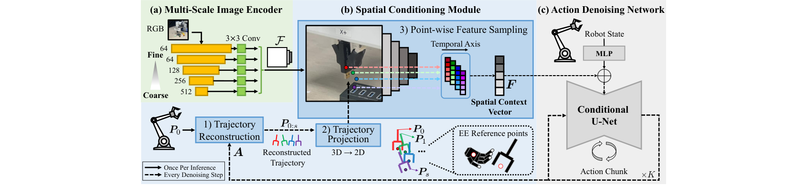
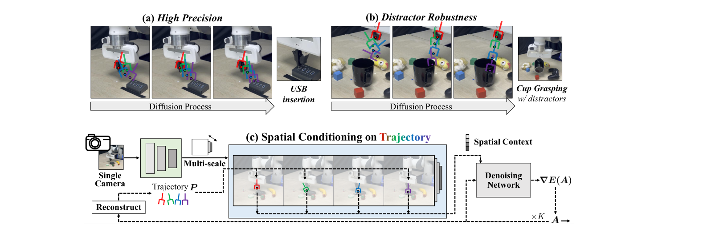

⚡速记层 · 思想 / 逻辑 / 方法
默认读完就走的一层——只讲思想、逻辑、方法；效果只作验证。要核对原文再进下面的「深读层」。注意：这是非 VLA 模型——单任务 imitation/diffusion policy，没有语言指令、没有 VLM。
视觉模仿学习（Diffusion Policy、ACT）现在默认配多相机：一个全局相机看大局，一个腕部相机（wrist camera）贴近接触点看细节。腕相机几乎是标配，因为它直接消除了"哪块区域重要"的视觉歧义。但加腕相机意味着多一路硬件、布线、标定。本文问：能不能只用一个全局 RGB 相机就做到 USB 插入这种精密接触任务？难点是单全局视角既要保留精细细节，又要在杂乱场景里自己找到任务相关区域。
- 关键洞察：未来末端轨迹投影到图像，天然标出了任务相关区域——夹爪要去的地方，就是该看的地方。
- 扩散去噪本来就在不断细化动作轨迹估计，把这个"中间产物"当注意力锚点，零额外感知模块、随去噪步演化。
- 用 FPN 式多尺度特征（ResNet 各 stage）：高分辨率层保细节（对插入对齐关键），低分辨率层保语义上下文。
- 沿轨迹各点、各尺度做双线性插值采样，时间轴平均池化、尺度轴拼接，得到一个紧凑 spatial context 向量，用 FiLM 注入去噪 U-Net。
- 验证：单相机就追平"加腕相机"的多相机基线；横长 s 越大、尺度越全，成功率单调上升——证明轨迹锚点+多尺度确实是有效的归纳偏置。
单 RGB 图 → ResNet-18 多尺度特征 F1–F5 ‖ 当前状态+中间动作样本 → 重建末端轨迹 → 投影回图像采样点特征 → spatial context 向量（FiLM）→ 条件 U-Net 去噪出 action chunk
- ① 多尺度图像编码器：ResNet-18 五个 stage 各接 3×3 卷积对齐到统一通道 d=64，得到 F1–F5（含粗到细全分辨率）。
- ② 空间条件模块（核心创新）：三步——轨迹重建（累加位移 Pᵢ=Pᵢ₋₁+ΔPᵢ）→ 3D→2D 投影（外参 [R|t]、内参 K）→ 沿锚点双线性采样多尺度特征。每个去噪步都重做一次，图像编码每次推理只做一次。
- ③ 标准 DP 去噪：把固定观测 O 换成随去噪步演化的 spatial context Fᵏ，其余沿用 Diffusion Policy 框架（DDIM 推理）。


核心成立：单个全局 RGB 相机就能追平甚至超过"全局+腕相机"的多相机配置，且在最难的接触任务上把差距拉得最大。
| 对照（Meta-World Hard 6 任务平均） | SCDP | 对手 | 📍 |
|---|---|---|---|
| vs DP3（点云，单相机） | 82.5% | 60.3% | p.5 · Tab.1 |
| vs DP+腕相机（多相机） | 82.5% | 74.2% | p.6 · Tab.3 |
| vs OTTER（VLM 注意，最强单视基线） | 82.5% | 47.2% | p.5 · Tab.2 |
| 真机 6 任务平均成功率 | 73.8% | 50.3%（DP） | p.8 · Tab.4 |
- 同一议题（空间表征）：SpatialVLA 用 Ego3D 位置编码在观测端注入 3D 空间先验；本文也是"给策略空间 grounding"，但走的是轨迹投影采样而非位置编码，且无语言、无大规模预训练。
- 构建于（扩散动作头）：直接搭在 RDT-1B、π0 同根的 Diffusion Policy 框架上——它们用扩散/flow 生成动作；本文创新点不在动作头，而在"把去噪中间轨迹反过来当视觉条件"这个反馈回路。
- 规模对照：Octo/X-VLA 是百万级轨迹预训练的通用策略；本文是 20 演示/单任务的小数据精密操作——两条正交的路线（泛化 vs 精度），不是竞品。
Track A（人形 / 移动操作 VLA）：不命中——无语言、无 VLM、无移动底盘，单臂固定基座单任务。但"扩散中间轨迹→图像注意力锚点"这个机制可借鉴：如果你的 VLA 用 diffusion/flow 动作头，理论上可在去噪回路里加一路轨迹投影采样来增强空间 grounding（需相机外参已知）。Track B（足式 locomotion / 控制）：不命中——纯桌面操作，无 locomotion 内容。落地门槛：需精确手眼标定（外参 [R|t]+内参 K），且假设任务相关区域就在末端轨迹附近（工具使用/远端接触会失效，见局限7）。
◆核心观点 · 证据
每条 = 分型论点（常驻）+ 解读（常驻）+ 折叠的逐字原文/译文（📍真实页码，Ctrl-F 锚点）。7 观点 · 8 证据。
问题与洞察
单全局相机做精密操作的双重难
去掉腕部相机、只剩一个全局 RGB 视角时，策略既要捕捉成功所需的精细视觉细节，又要在无结构场景里自己找出任务相关区域——现有方法把观测压成全局 embedding，做不到。
📍 p.1 · Abstract — 查逐字证据
manipulation from a single global view remains challenging, as the policy should capture fine-grained interaction details and identify task-relevant regions without local wrist views.
末端轨迹本身就是注意力锚点
核心洞察：未来末端执行器轨迹投影到图像上，天然标出了任务相关区域——夹爪要去哪，那里就是该看的地方。于是扩散去噪过程中不断演化的中间轨迹，可直接当作视觉注意力锚点。
📍 p.2 · §1 Introduction — 查逐字证据
Our key insight is that future end-effector trajectories projected onto the image can provide useful attention anchors for identifying task-relevant regions. During the diffusion process, SCDP leverages intermediate action trajectories as evolving estimates of future motion and extracts point-wise features at those anchors
不依赖大模型/外部感知管线
SKIL 靠分割掩码、OTTER 靠 VLM 找语言相关区域——都依赖大型预训练模型且多阶段感知管线，早期感知误差会级联到下游。SCDP 用扩散回路内部的中间轨迹当空间查询，无外部感知模块。
📍 p.3 · §2 Related Work — 查逐字证据
they often rely on multi-stage perceptual pipelines, such as language-model prompting, segmentation, or point tracking modules, where errors from early perception stages can cascade into downstream policy learning. SCDP instead leverages intermediate action trajectories within the diffusion loop as spatial queries
方法
空间条件模块：重建→投影→采样
三步走：从中间动作轨迹累加位移重建未来 EE 点轨迹 → 用相机外参/内参投影到 2D 像素 → 在这些锚点上对多尺度特征做双线性插值采样。每个去噪步都重做一次，使注意力随去噪动态聚焦。
📍 p.4 · §3.2 Spatial Conditioning Module — 查逐字证据
While P0 remains constant as determined by the current state, the subsequent trajectory points P1:s are iteratively updated throughout the denoising process. This allows the model to dynamically adjust its spatial attention to task-relevant regions.
📍 p.4 · §3.2 Point-wise Feature Sampling — 查逐字证据
we apply average pooling only along the temporal axis while preserving multi-resolution information through concatenation of the pooled feature vectors. ... This yields a compact feature representation that preserves multi-scale visual information centered around the attention anchors.
多尺度编码 + FiLM 注入 DP
用 ResNet-18 五个 stage（FPN 式）取粗到细特征保留细节与上下文；用空间 context Fᵏ 替换标准 Diffusion Policy 里的固定观测 O，经 FiLM 调制条件 U-Net，DDIM 推理。
📍 p.5 · §3.3 Diffusion Process — 查逐字证据
the denoising network is conditioned on the spatial context Fk instead of the fixed visual observation O. ... the spatial context Fk is incorporated via Feature-wise Linear Modulation (FiLM). During inference, we employ the DDIM scheduler
结果与边界
仿真：难任务上拉开大差距
仅 20 演示+单全局相机，SCDP 在 Meta-World 每个难度组都过 80%；越难差距越大——Hard 82.5%（DP3 60.3%、DP 16.7%）。消融显示多尺度（全 F1–F5 vs 仅 F5）带来 +13.9pp。
📍 p.5–6 · §4.2 Simulation Results — 查逐字证据
SCDP achieves over 80% success in every Meta-World difficulty group using only 20 demonstrations and a single global camera. Notably, SCDP outperforms the baselines by larger margins on the "Hard" and "Very Hard" groups
📍 p.6 · §4.3 Effects of Multi-Scale Image Encoder — 查逐字证据
Peak performance reaches 82.5% when all scales (F1–F5) are utilized, representing a 13.9%p improvement over the F5-only variant. Notably, even DP benefits substantially from using all feature levels
单 RGB 追平"加腕相机"多相机
最有说服力的对照：SCDP 单 RGB 在 Meta-World Hard 拿 82.5%±11.5，超过 DP+额外腕相机的 74.2%±29.4 和 DP3+深度的 60.3%±38.0，且方差最低（最稳）。
📍 p.6 · §4.2 Single RGB View Competitiveness · Tab.3 — 查逐字证据
SCDP achieves performance comparable to DP with an additional wrist-view camera and DP3 with depth observations on Meta-World "Hard" tasks, while attaining the highest average success rate and the lowest standard deviation.
真机：精密插入与抗干扰双赢
Franka + 单 RealSense 相机上跑 6 个真任务：USB 完整插入(Push) 30%、其余基线全 0%；干扰物下抓杯把手 85%（DP 仅 30%）；Push Cube 在干扰/杂乱场景维持 75%/70%（DP 跌到 50%）。6 任务均值 73.8%（DP 50.3%）。
📍 p.8 · §5.2 Distractor Robustness — 查逐字证据
While DP's performance drops from 90% to 50% in both Distractor and Cluttered scenes, SCDP maintains relatively high success rates of 75% and 70%, respectively.
假设"任务相关 = 末端附近"
方法假设任务相关视觉信息就在末端轨迹附近——对工具使用/间接交互（接触点远离末端）可能失效；重遮挡下从注意力区抽特征也变难。且无语言/无泛化评测，仍是单任务模仿学习。
📍 p.8 · §6 Conclusion and Limitations — 查逐字证据
it assumes that task-relevant visual information lies near the end-effector trajectory. This assumption may limit its applicability to tool-use or indirect-interaction tasks, where task-relevant contacts occur away from the end-effector.
⎘开源状态 · 实时核查（截至 2026-06-16）
- 代码
- 未发布 论文与 arXiv 页面均无 code/项目页链接；作者 GitHub（kh11kim）未见本工作仓库
- 权重
- 未发布 无预训练 checkpoint
- 数据
- 未发布 真机数据集（USB 180 / Battery 90 / Long-Horizon 120 / 其余各 50 演示）未公开
2026-06-16 WebSearch / 查阅 arXiv:2606.14535 摘要页 + 作者 GitHub：未发现任何代码、权重、项目主页或数据集发布。这是一篇很新的 arXiv 预印（2026-06-12），尚未同行评审；基准 Meta-World/DexArt 为公开仿真环境，但 SCDP 实现与真机数据集均未开源。后续可能补放，建议复查。
⚖批判 · 评级
"用扩散去噪中间轨迹当视觉注意力锚点"是一个干净、自洽、零额外感知模块的好点子，且消融扎实（横长 s=0→12 单调上升、多尺度 +13.9pp、F5 上 SCDP vs DP 40+pp 差距）；单相机追平加腕相机的对照（Tab.3）直接支撑标题主张，方差最低更显稳健；真机 USB/Battery 插入与抗干扰都有验证。
未开源（代码/权重/数据全无，见开源状态）；非同行评审预印；适用性受"任务相关≈末端附近"假设限制（局限9）；真机绝对成功率不高（USB 完整插入仅 30%）；单任务、无语言、无泛化评测——是 diffusion policy 的机制改进，非通用策略。
评级：Valuable 一个机制清晰、可迁移、消融到位的 single-camera diffusion policy 改进，对"想给扩散动作头加空间 grounding"的工程师有直接借鉴价值；但范围窄（单任务/非 VLA）+ 未开源，限制了即时落地与影响力，未达 Important。